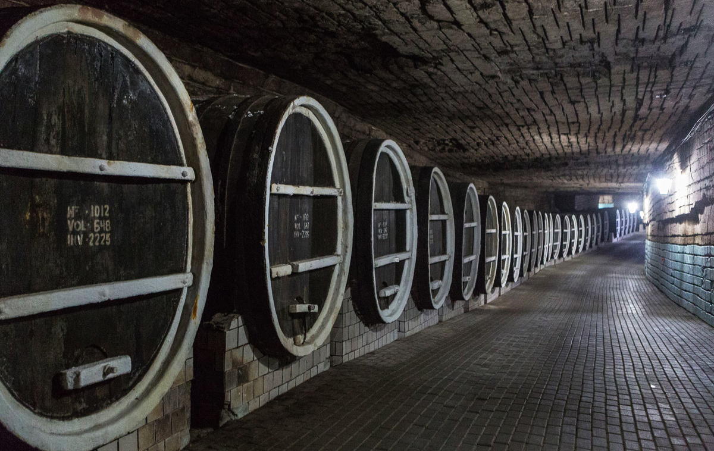
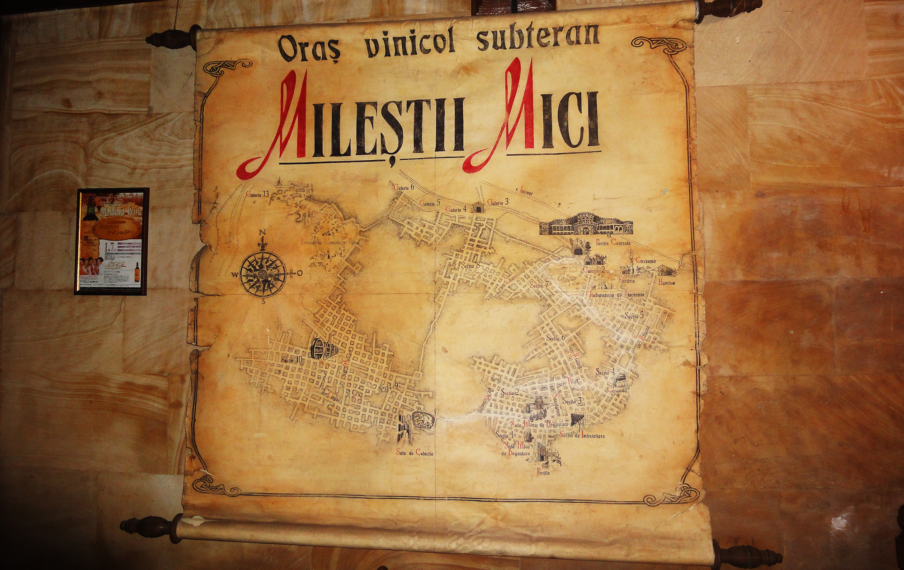
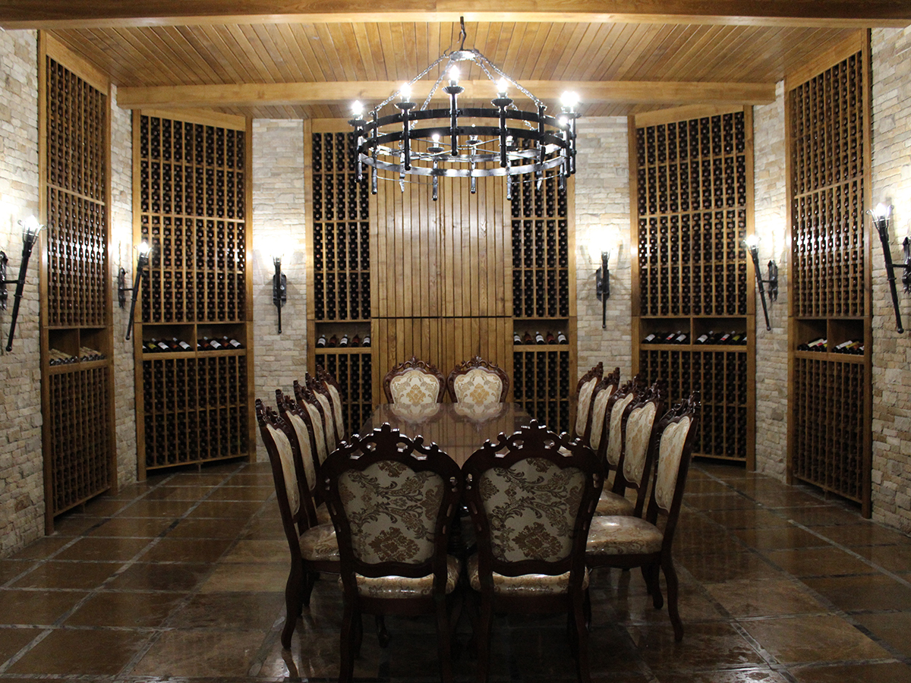
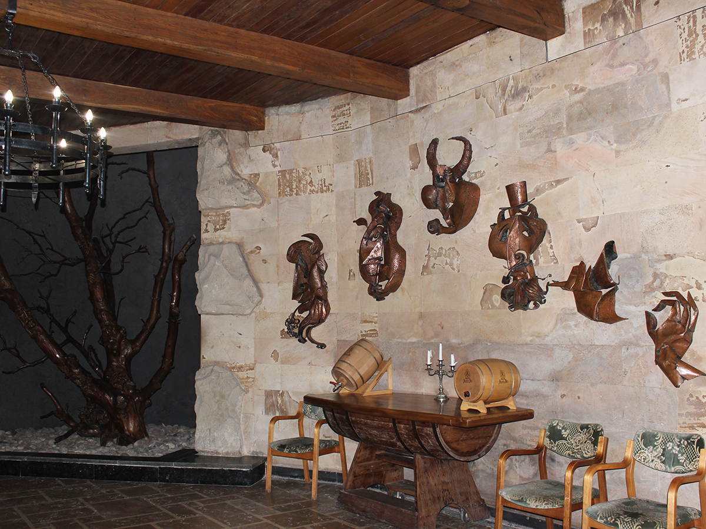
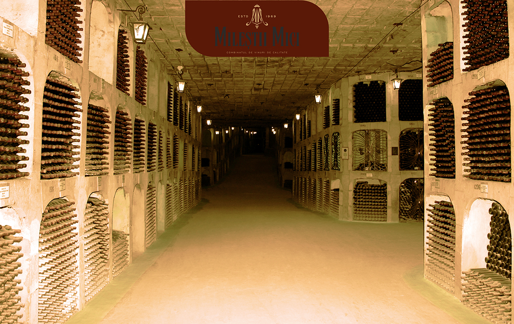
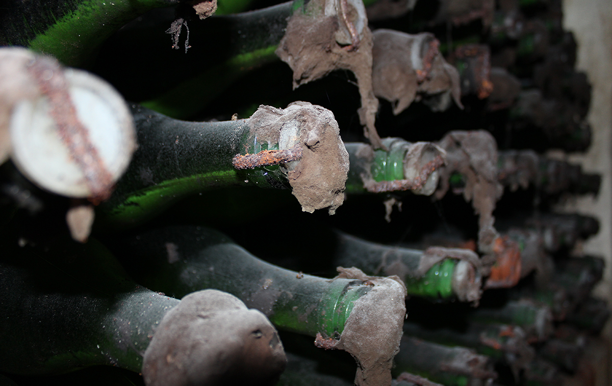
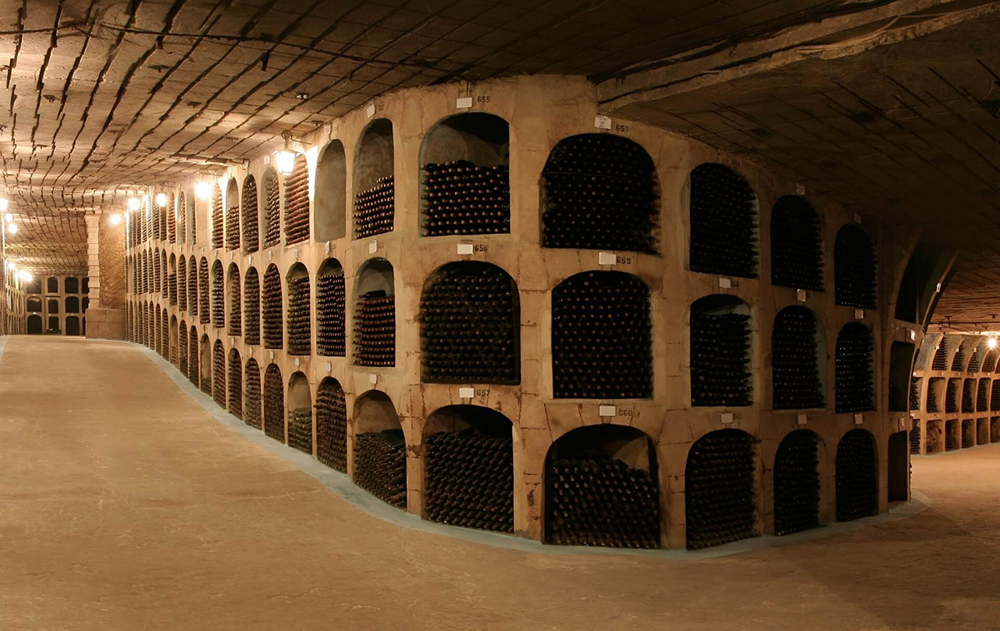

Vinăria Mileștii Mici
Istoria vinăriei Mileştii Mici pornește de la o veche mină de piatră, situată la doar 20 km de orașul Chișinău, capitala Republicii
Extragerea zăcămintelor de calcar de pe cca 200 de km de galerii subterane a favorizat crearea condițiilor ideale pentru păstrarea îndelungată a vinurilor cu o umiditate relativă 85-95% și temperatura constantă de 12-14°C.
„Colecţia de Aur” Mileştii Mici este, indiscutabil, cartea de vizită nu doar a Vinăriei, ci şi a țării noastre, fiind recunoscută în anul 2005 de către Guinness World Records cea mai mare colecţie de vinuri din lume. Un loc absolut impresionant, care numără cca 1.5 mln sticle de vin şi se află la o adâncime de 80 metri sub pământ.
Galeriile subterane Mileștii Mici
La Vinăria Mileștii Mici, vizitatorii pot explora și experimenta istorie, tradiție, cultură, savoare și arome în cadrul programului de vizită a galeriilor subterane. Arhitectura complexului amintește de castelele feudale, iar intrarea în galerii și cascada cu apă cristalină oferă o experiență distinctivă.
Itinerarul excursiei poate fi parcurs atât cu mașina, cât și într-o plimbare relaxantă pe jos prin străduțele umbrite de felinare, denumite după soiurile de vin, precum Cabernet, Aligote și Feteasca, sugerând atmosfera unui oraș subteran dedicat vinului.
 Galeriile subterane au o lungime totală de 200 km, dintre care aproximativ 55 km sunt folosiți în scopuri tehnologice, acoperind o suprafață de 182 mii m².
Grosimea stratului de la suprafață variază între 30 și 85 m. Butoaiele mari de stejar, asamblate în anii 70-80 cu lemn importat din Rusia și Ucraina, au capacități variabile între 600 și 2000 dal de vin.
Cascada săpată în piatră și butoaiele masive de stejar contribuie la o atmosferă de poveste și mister. Fresca buteliei cu pocalul de șampanie și aroma vinului completează atmosfera, oferind o experiență distinctivă pentru vizitatori.
Degustarea vinului Mileștii Mici
După explorarea frumuseților subterane, inclusiv a “Colecției de Aur” Mileștii Mici, vizitatorii sunt invitați în Sălile de Degustare. Vara, acestea oferă o răcoare plăcută, în timp ce iarna aduc o atmosferă caldă, animată de focul din camin.
Decorul original este realizat din pietre luminate de lămpi, creând o atmosferă plăcută și captivantă. Acvariile cu pești, sculpturile în forma de cascadă și liniștea tulburătoare distrag atenția de la grijile și nevoile cotidiene.
 Bucătăria tradițională moldovenească, pregătită de bucătari iscusiți, satisface preferințele celor mai exigenți clienți, indiferent dacă sunt vegetarieni sau gurmanzi.
Vinurile de înaltă calitate, atât albe, cât și roșii, apreciate în concursuri naționale și internaționale cu diplome și medalii, pot fi degustate și servite alături de mâncăruri alese, în compania familiei, prietenilor sau partenerilor de afaceri.
Colecția de Aur a Vinăriei Mileștii Mici
Vinăria Mileștii Mici deține o colecție de vinuri care a consolidat faima și prestigiul întreprinderii pe piața internă și internațională a vinurilor. În august 2005, “Colectia de Aur” Mileștii Mici a fost înregistrată în Cartea Recordurilor Guinness ca cea mai mare colecție de vinuri din lume.
Aproximativ 1,5 milioane de butelii de vin sunt păstrate în colecție și sunt comercializate atât în țară, cât și în străinătate.
Arhitectura în stil gotic și perfecțiunea formelor aduc aminte de templele grecești vechi. La o adâncime de 80 de metri, în casete acoperite de praf, mucegai și pânze de păianjen, vinurile își duc viața de zi cu zi în liniște.
  Tururi Vinicole la Vinăria Mileștii Mici
Mileștii Mici este recunoscută drept cea mai mare cramă subterană din Moldova, cu peste 200 km de tuneluri de calcar, dintre care 55 km sunt folosiți pentru depozitarea vinului.
Pivnița găzduiește o colecție imensă de peste 2 milioane de sticle de vin, stabilind un record mondial conform Cărții Recordurilor Guinness.
Vizitatorii au posibilitatea de a se plimba de-a lungul galeriilor cu trenulețul electric sau de a face o plimbare cu bicicleta. Temperatura constantă în galerii este de 12-14 grade Celsius, iar umiditatea variază între 85% și 90%.